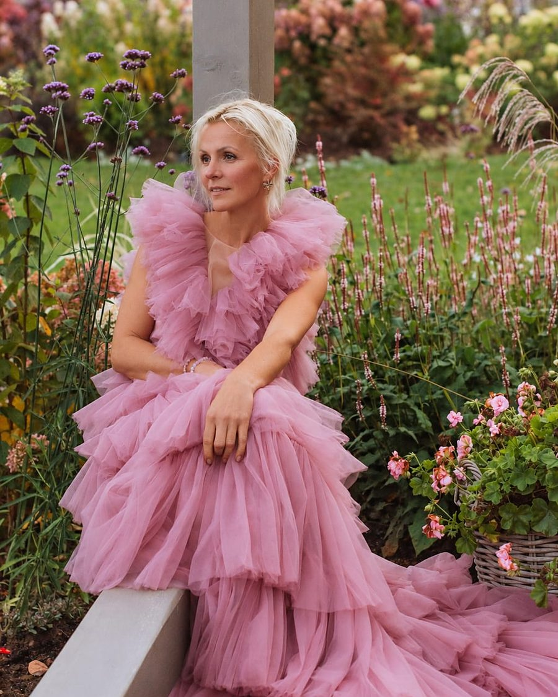

Mūsu stāsts
Viss sākās ar vienu
MILZĪGU sapni!
Reiz atradu vietu ar 1800 pamestām hortenzijām. Neviens tās vairs nekopa, un es vienkārši nevarēju aiziet.
Tā aizsākās mūsu ģimenes dārzs. Šodien te aug vairāk nekā 2000 hortenziju un vairāk nekā 60 šķirņu. Mēs te kopā stādām, kopjam, radām un iedvesmojam — arī stikla namiņa dekorācijas ir mūsu pašu rokām darinātas.
Dārzs nav muzejs. Šeit drīkst apsēsties, ņemt līdzi savu pikniku un palikt tik ilgi, cik gribas. Un, ja pienāksiet klāt un pajautāsiet, es labprāt pastāstīšu par katru dārza stūrīti.
Laura ♡